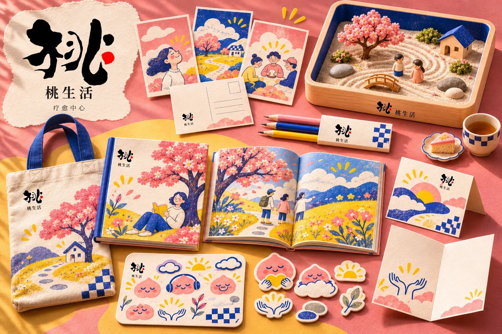
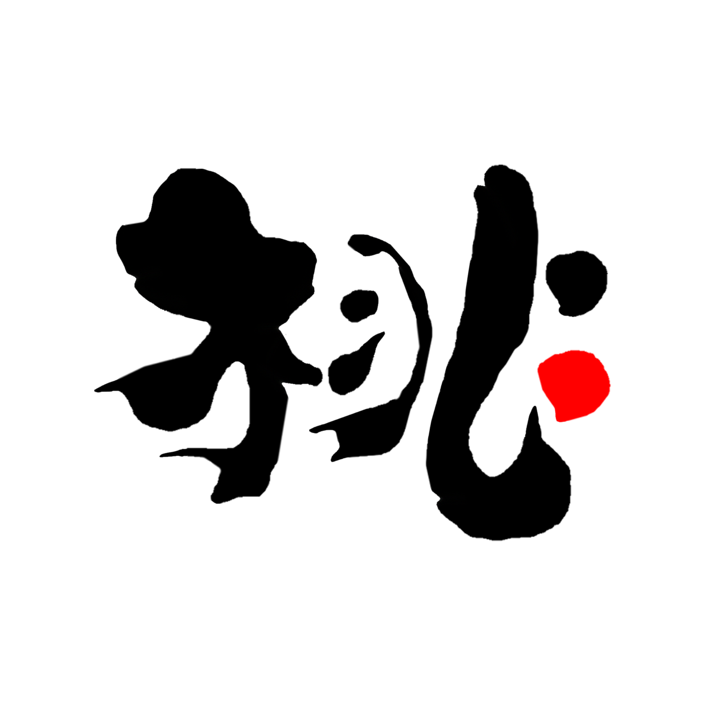
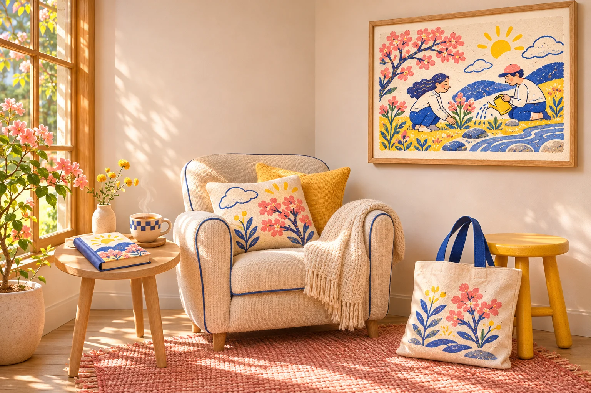
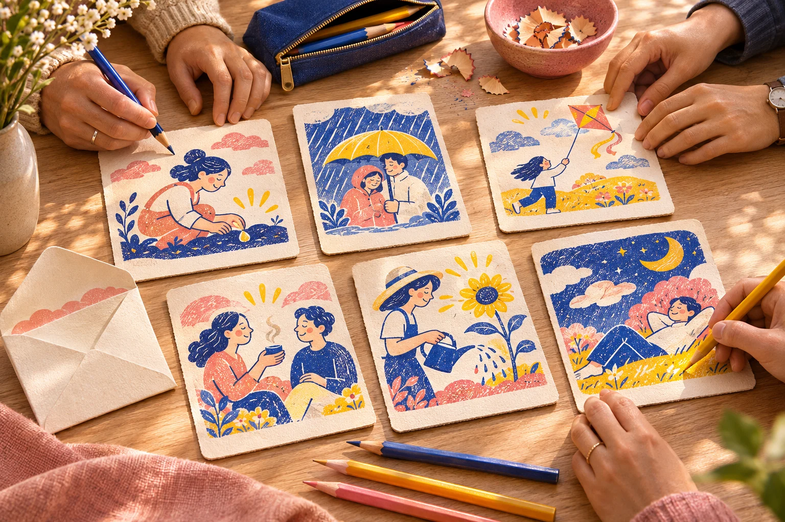
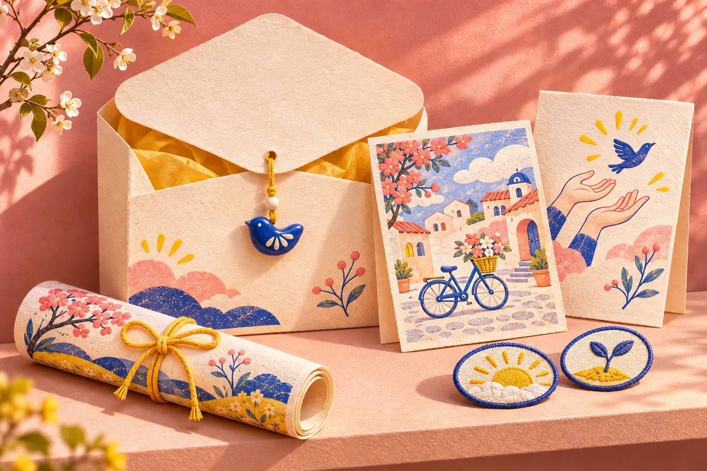
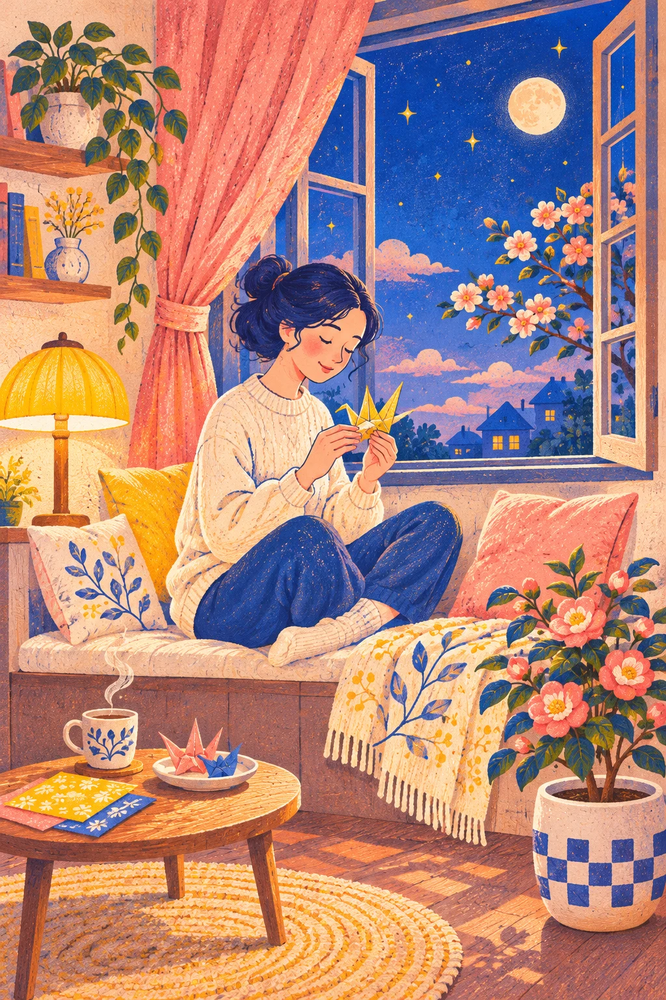
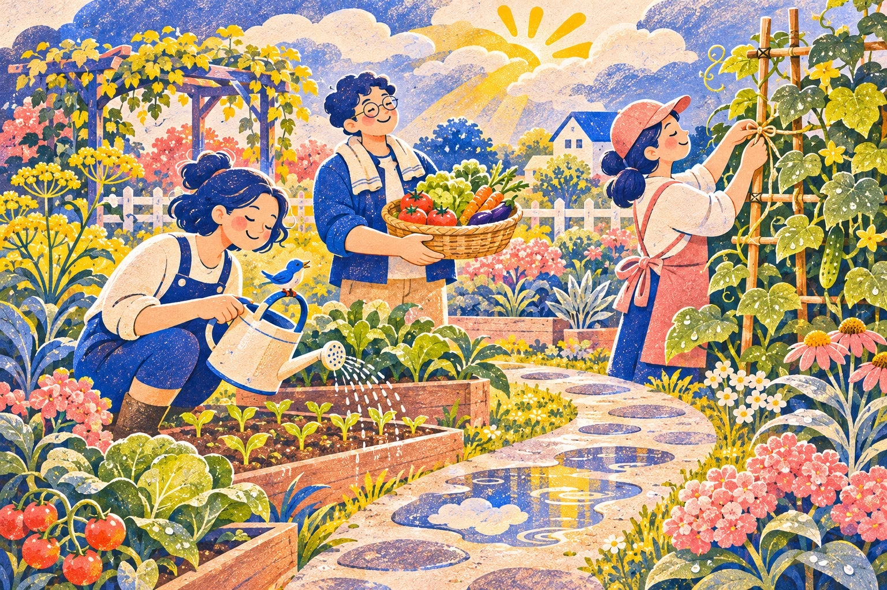
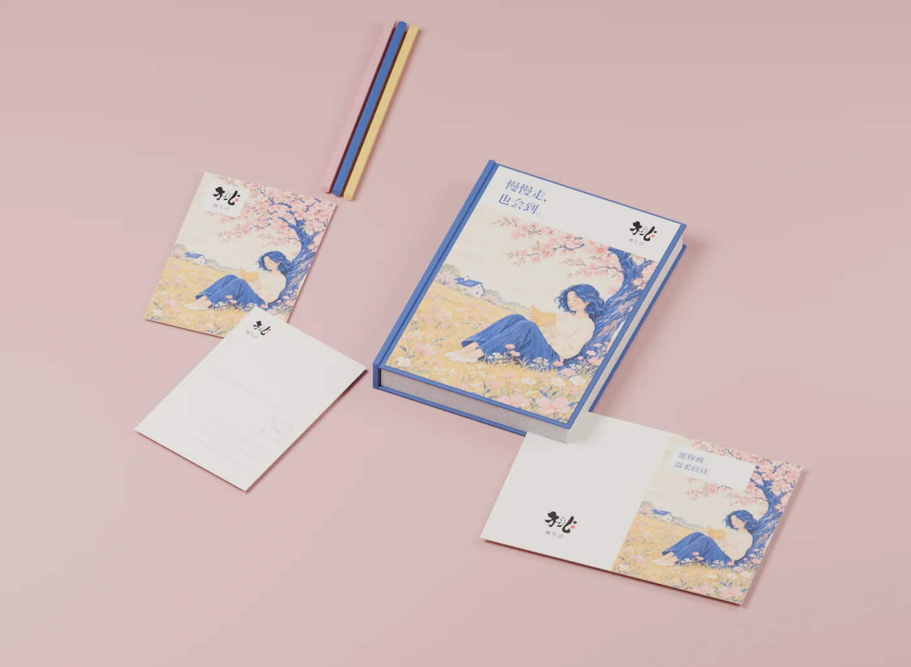

Brand identity / 2026 / VIS
桃生活
TAO LIFE / CARE & CONNECTION
保留「桃」，扩展生活的温度。

沿用原始桃生活标志，不重新设计字形。以桃粉、明黄和靛蓝，连接阅读、分享、情绪表达与日常陪伴。此处为疗愈中心视觉提案，不作医疗效果承诺。



同一种画风，不同的故事。


把陪伴，放进纸张。

制作说明 / 本项目为品牌视觉探索与应用提案。AI 生成场景与 Blender 渲染已分别标注；图片中的小字、材料性能及生产工艺尚待打样验证。这里展示的是当前阶段方案，而非商业落地声明。